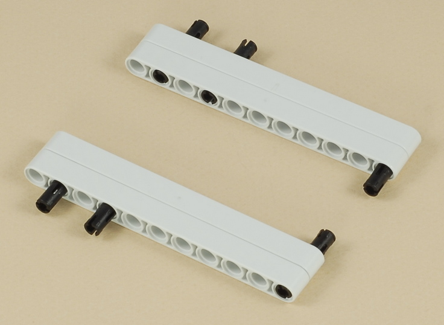

Fun Projects for your LEGO® MINDSTORMS® NXT!
|
|
Fun Projects for your LEGO® MINDSTORMS® NXT! |
| Scribble Pad |
|

1

2
3
4
5
6
7
| Attach a wire from the left motor to port B on the NXT and from the right motor to port C on the NXT. |
|
Scribble Pad Programming Use the program Scribble Pad for the Scribble Pad. This program is designed to be as simple as possible in order to make it easy to understand, so it has a number of weaknesses. See the Challenges section for ideas on how to improve it. |
Use the two dial knobs like an Etch-a-Sketch to scribble or try to draw something on the screen.
Challenges
|
|
Copyright
©
2007-2009 by Dave Parker. All rights reserved. |